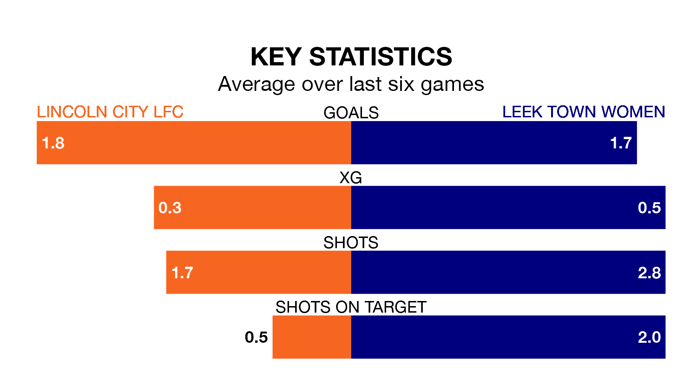

Struggling Leek Town Women face Lincoln City LFC away on Sunday looking to build on a win in their last league outing.
After securing all three points with a 3-0 victory over Northampton Town Women on January 7, Leek Town sit ninth in Womens National League Division One Midlands.
They travel to play a Lincoln City side eighth in the standings, who also won their last match, 2-1 against Leafield Athletic Women.
With 24 goals in 10 games so far this season, Lincoln City are scoring more than average in the league with 2.4 goals per game. But they are conceding more than average too, letting in 22 goals at a rate of 2.2 per game.
Leek Town, meanwhile, are below average scorers, with 1.5 goals per game, compared to a league average of 1.9. They have conceded 2.5 goals per game.
The home team are in disappointing form in Womens National League Division One Midlands, with one win and two draws from their last six games.
With a win and a draw over that period, the visitors' form is slightly worse – they have taken four points from 18, compared to Lincoln City's five.
Over the last two years, Lincoln City and Leek Town have played each other on four occasions. They won one each, and they drew twice.
On average, Lincoln City scored 3.5 goals and Leek Town 2.5 in those matches.
Their last meeting was on September 3, when they played out a 2-2 draw.
Updated: 13:38 (UTC), 10/01/24